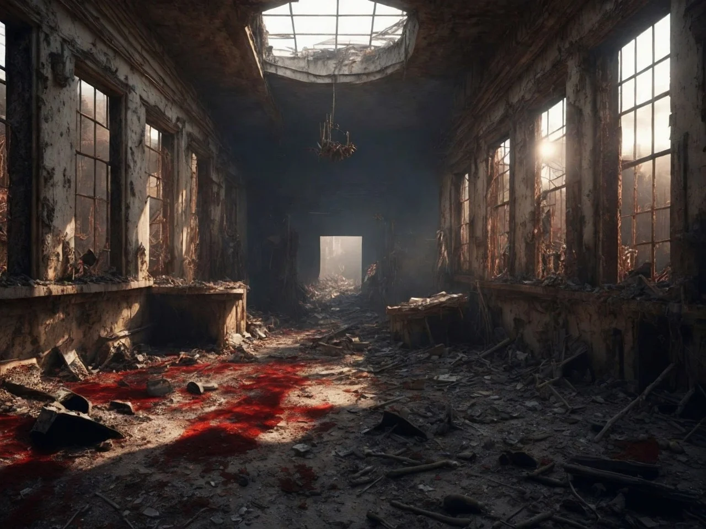
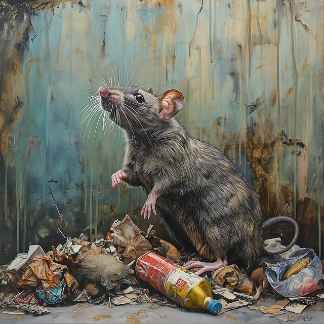
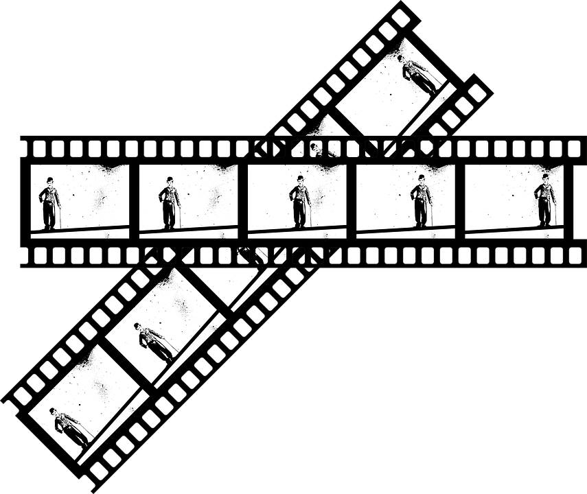

Fortsetzung Aktenz.G // Pelz V37k - $007
Um den Tag dann doch noch in einen guten Tag zu verwandeln, schritt
Gregg fleißig zur Tat. So leerte er alle Regale und Schränke und brachte
deren Inhalt sorgsam in den Bulli, der vor dem Geschäft parkte. Schon
bald war alle Ware ordentlich verstaut und Gregg schaute sich
konzentriert um, was noch abtransportiert werden könnte.
Auf der Ablage vor der Kasse fand er eine Todesanzeige, die er rasch
überflog. Eine Gerda Rugenberger war im Alter von nur 54 Jahren
plötzlich verstorben und sollte heute Nachmittag beerdigt werden.
„Plötzlich verstorben“, ging es Gregg durch den Kopf, „wenn das nicht
zum Himmel stinkt; das ist doch sicherlich ein Gewaltverbrechen, das
aufgeklärt gehört.“ Daher schob er rasch die Anzeige in seine
Jackentasche, bevor er in Richtung Büro rief „Hallo, hallo, wo sind Sie
denn? Es ist alles verpackt.“
Aus dem Nebenraum hörte er, wie Gegenstände in einen Beutel geschüttet
wurden, dann tauchte die Dame wieder auf.
„Ei wie gut von Ihnen. Sie sind wirklich ein Engel auf Erden….ganz, ganz
lieben Dank“ und sie drückte ihm noch einen fetten Kuss auf die Wange,
bevor sie zur Tür eilte. „Ich muss jetzt los. Ziehen Sie einfach die
Ladentür hinter sich ins Schloss. Tschüssi!“.
Weg war sie und eine Minute später auch der Bulli, der vor der Tür
geparkt hatte.
Gregg, der beim Küssen rot angelaufen war, wischte sich verstört den
Lippenstift von der Backe. Zufrieden blickte er sich im leeren Geschäft
um. Wenn er heute auch keinen Fall gelöst hatte, so hatte er zumindest
einer gestressten Businessfrau geholfen. Das war ein guter Start in sein
neues Leben.
Wohlgestimmt zog er die Ladentür hinter sich zu. Aber sie wollte nicht
im Schloss einrasten. Er zog nochmals. Die Tür blieb offen. Merkwürdig.
Gregg beugte sich zum Türschloss hinunter und erblasste. Das Schloss war
aus seiner Halterung gebrochen. „So etwas sollte man reparieren, bevor
man den Laden verlässt“, kam es ihm in den Sinn, "aber wo ist hier das
Werkzeug?"
Fassungslos suchend betrat er erneut das Geschäft. Erst jetzt fiel ihm
das Türschild auf, das die Frau kopfüber an die Seite gestellt hatte.
Gregg drehte es um:
„Wegen Trauerfeier heute geschlossen! – Fam. Maja Rugenberger“
stand darauf geschrieben.
„Rugenberger“, hallte es durch Greggs Kopf. Irgendwo hatte er diesen
Namen schon gelesen, er wusste aber nicht mehr wo. Nichtsdestotrotz, das
mit dem Türschloss war ein Problem. Das sollte gelöst werden. Aber erst
einmal musste er nach Hause. Vielleicht stand dort bereits sein erster
Kunde mit einem dicken Auftrag vor seiner Tür.
Die Ampel hatte inzwischen ihren Geist aufgegeben, wohl um der
gleichnamigen Einrichtungen in Berlin bereits anzudeuten, wohin die
Reise ging. Und so stand Gregg verzweifelt am Straßenrand, während ein
Auto nach dem nächsten an ihm vorbei raste. Es war gänzlich undenkbar,
diese Straße überhaupt zu überqueren. So fing Gregg an, mit seinen
Händen zu winken, um den Autofahrern sein Anliegen zu vermitteln und sie
zum Halt zu bewegen. Er schwang die Arme auf und ab, wie ein Vogel.
Hüpfte hoch und runter und wurde vor Anstrengung immer roter im Gesicht.
Endlich erbarmte sich ein Fahrer, hielt an, drückte die Beifahrertür auf
und schrie: „Steigen Sie ein. Schnell. Ich hab`s eilig!“. Dem Befehl
folgend und ohne weiteres Nachdenken sprang Gregg auf den Beifahrersitz
und das Auto raste mit ihm davon.
„Wo fahren wir denn hin“, schrie Gregg den Fahrer entgeistert an, als er
merkte, wie sich sein Büro, die Nachbarhäuser, ja die ganze Straße
hinter ihnen in Luft auflösten. „Zum Politikerempfang im Rathaus!“.
„Im Rathaus? Was in aller Welt wollen wir denn dort?“, wollte Gregg
wissen. „Ach, ich hab mich noch nicht vorgestellt. Ich bin Darren vom
Abendblatt. Der Reporter vom Dienst. Immer da - immer nah, wenn man mich
braucht. Ich rieche gute News schon von Weitem. Und Sie?“.
„Gregg McGreggor, Privatdetektiv“, freute sich Gregg, Eigenwerbung
machen zu können. „Ah, Privatdetektiv“, murmelte Darren, „das klingt
nach einem echt interessanten Beifahrer. Was für Fälle lösen Sie denn
derzeit?“.
Gregg biss sich auf die Lippe. Irgendwas musste er jetzt doch zum Besten
geben. „Ja, da sind viele spannende Dinge. Ich darf nicht über alles
reden.“, versuchte er der Frage auszuweichen.
„Ist klar, alles geht nicht, aber etwas sollte für mich schon drin
sein…immerhin nehme ich Sie jetzt kostenlos mit in die Innenstadt. Ich
könnte Sie sogar ins Rathaus einschleusen, wenn Sie wollen. Sag ich
denen einfach, Sie wären mein…äh…äh…Kameramann“.
Darren stupste Gregg in die Seite. „Man, das wäre doch was. Die im
Rathaus haben doch immer Dreck am Stecken. Da haben Sie rasch noch
weitere Fälle, die gut bezahlt werden….zahlt ja im Grunde alles der
Steuerzahler“. Gregg merkte, dass Darren voll in seinem Element war.
„So ist es“, gab Gregg ihm recht. „Da führe ich auch Ermittlungen. Echt
unglaublich, was da abgeht“. Gregg fühlte, wie gut es tat, von sich
selbst zu prahlen.
„Was da abgeht? Was geht denn da genau ab“, hakte Darren nun ein. „Komm
schon, erzählen Sie. Lassen Sie sich nicht immer so bitten.“, ermunterte
er nun Gregg.
Gregg spitzte den Mund und zog langsam und stoßweise Luftzüge ein. „Nun
das, was immer so in Rathäusern abgeht“, stotterte er.
„Ja schon, aber was in diesem Fall genau?“, Darren ließ nicht los.
„Tja, halt das mit der Sekretärin“, Gregg hielt inne.
„Läuft da was mit dem Oberbürgermeister?“, Darrens Augen funkelten. Das
waren die Stories, die er brauchte. „Ja?“.
„Könnte man so sagen“, nuschelte Gregg verlegen. Dabei schaute er auf
seine Armbanduhr, in der Hoffnung, dass diese ihn bald aus diesem
leidvollen Gespräch erlösen möge.
Gregg schnaufte erlöst, als Darren in die Auffahrt zum Rathaus einbog.
Jetzt konnte es sich nur noch um wenige Minuten handeln, bis der Spuk
vorbei war, schoss es Gregg durch den Kopf. Die Fahrerscheibe wurde
heruntergelassen und Darren betätigte die Sprechanlage, bevor eine
Schranke hochging und sie auf den Hof des Rathauses fahren konnten.
Zur gleichen Zeit ertönte hinter ihnen eine Polizeisirene. Sie gehörte
zu der Kolonne der anreisenden Politiker. Auch sie stoppten auf dem
Rathausplatz. Unter einem Schwall von Blitzlichtern gelangten die
Politiker zusammen mit den Reportern ins Gebäude. Gregg war von all dem
so fasziniert, dass er vergaß, sich rechtzeitig abzusetzen. Dies wurde
ihm aber erst bewusst, als er im Rathaussaal in der hinteren Reihe Platz
genommen hatte.
Der Oberbürgermeister ließ seine Gäste ins goldene Buch der Stadt
eintragen. Ein Akt, der zuvor zu massiver Unruhe in der Bevölkerung
geführt hatte, da diese kein Engagement der Gäste für die Stadt erkennen
konnte. Trotz all der schönen Kleider der Politikergattinnen und Gatten
wollte dennoch keine Stimmung aufkommen. Auch die sich anschließende
Fragerunde brachte wenig, mit dem sich eine Zeitung nutzerfreundlich
füllen ließ. Darren war enttäuscht. Ohne Story kein Verdienst. So
einfach war die Regel bei der Presse.
Es gab nur eine Lösung. Daher erhob sich Darren zum Ende der Fragestunde
und schmetterte zur Verblüffung aller in den Raum: „Was ist das nun, mit
Ihrer Liebschaft? Wann wollten Sie das öffentlich machen?“
Entsetztes Schweigen im Raum. Die Politiker starrten einander verwirrt
an. Wessen Sau wurde nun durch den Ort getrieben? Wer von ihnen würde
heute bloß gestellt werden. Die Zeit schien stehen geblieben zu sein.
Dann schob sich ein kleiner Minister in Begleitung einer Dame im
Pelzmantel nach vorne. "Das ist Charlène, eine entfernte Cousine von
mir. Sie ist auf Besuch aus den USA. Das würde ich nicht als Liebschaft
bezeichnen. Wir sind ja verwandt. Also nichts Bewegendes".
Im ganzen Saal war die Erleichterung zu spüren, die nun vom Podium
ausging, auf dem die Politiker schlagartig aus ihrer Schockstarre
auftauten.
„Nein“, schwall es freudig aus Gregg heraus. „Das ist nicht Charlène.
Das ist Maja Rugenberger, die Besitzerin des Pelzgeschäfts in der
Tourette-Strasse. Ich habe sie heute Morgen kennengelernt. Eine wirklich
herzensgute Dame.“
Nun drängte sich der Oberbürgermeister ans Rednerpult. Verärgert stellte
er klar, dass dies ein Irrtum sei. Maja Rugenberg sei bekanntermaßen
seine Gattin und die befände sich heute auf der Beerdigung ihrer älteren
Schwester und sei daher leider unpässlich.
„Nein, nein, nein, aber das ist doch nicht möglich. Die Frau
Rugenberger“, dabei deutete Gregg auf die Dame im Pelz, die sich nun
offensichtlich gar nicht mehr wohl fühlte, „und ich haben doch heute
Morgen die gesamte Ware aus dem Pelzladen in der Tourette-Strasse
ausgeräumt. Ich weiß genau, dass sie das war.“
Die Dame im Pelz ergriff die Flucht. Sie rannte so schnell sie konnte,
auf die Seitentür zu. Passanten versuchten sie aufzuhalten, bekamen aber
nur den Pelz zu greifen, der sich schnell vom Körper der Dame löste,
bevor diese aus dem Saal verschwandt.
„Was haben Sie in unserem Pelzgeschäft zu suchen?“, hörte die Menge nun
den Oberbürgermeister ins Mikrophon brüllen.
Da dämmerte es auch Gregg, dass irgendetwas nicht richtig gelaufen war
und es auch für ihn an der Zeit war, zu verschwinden. Die Flucht aus der
letzten Reihe des Saales erwies sich als relativ schwierig, da sich die
Zugangstür zum Saal am anderen Ende des Raumes befand. Bei all den
Menschen, die sich ihm nun in Weg stellen würden, war das nicht zu
schaffen. Er musste durch das Fenster entkommen.
Mit einem Sprung kletterte er auf das Fensterbrett und versuchte
verzweifelt, die Verschlüsse zu öffnen. Dabei sprang ihm ein
Fensterflügel genau ins Gesicht. Nur mit Mühe konnte er sich halten.
Seine Finger rutschten an der Scheibe entlang, bis er den Rahmen zu
Fassen bekam und ihn umklettern konnte.
Jetzt stand er draußen auf dem Fenstersims. Das waren mindestens 5 Meter
Tiefe! Hinunter zu springen war viel zu riskant. Aber vielleicht konnte
er sich am Efeu, der das Gebäude begrünte herunter hangeln? So griff er
mutig die ersten dickeren Efeustränge, um schnell zu erkennen, dass
diese sich bei weitem nicht genug ins Gebäude hineingefressen hatten, um
sein Gewicht zu halten. Und so konnte das rege Publikum, welches sich
bereits an die Fenster begeben hatte, einen Stuntman reifen Akt
bewundern, bei dem der Held mitsamt eines Riesengeflechts von
Hausbegrünung im weiten Bogen 'gen Innenhof stürzte.
Zu dem erwarteten Aufprall auf dem Betonboden kam es dann aber doch
nicht, da eine Hoflaterne dem im Wege stand und Gregg abfing. Sie bote
Gregg auch die Möglichkeit, sanft an ihr zu Boden zu gleiten.
Der Wust von abgerissenen Efeuranken hinderte die Zuschauer letztlich
daran, nachzuvollziehen, in welche Richtung Gregg entfliehen konnte.
Darren strahlte. Er hatte 1a Bilder im Kasten und eine coole Story würde
ihm auch noch einfallen.
Derweil rannte Gregg um sein Leben. In seinem Kopf ratterten die
Krimiserien, in denen auf Flüchtende immer tödliche Schüsse abgegeben
wurden.
Als er an der Ringkirche ankam, war er so außer Atem, dass er eine Pause
einlegen musste. Er hustete aus dem letzten Loch. Immerhin war er dem
Rathaussaal entkommen. Auf dem Friedhof vor der Kirche würde ihn niemand
vermuten.
Die Kirchenuhr schlug 2 und zugleich öffnetet sich das Eingangsportal,
um der Trauerprozession Auszug zu gewähren. Gregg musste hier weg. Er
krabbelte rückwärts. Bloß weg vom Hauptweg, dachte er. Noch ein paar
Meter mehr nach hinten, dann würden sie ihn sicherlich nicht sehen
können. Gregg schob die Füße weiter. Meter um Meter zog er sich
rückwärts, seinen Blick immer nach vorne gewandt, um die Menschenmenge
im Auge zu behalten, die sich nun aus der Kirche drängte.
So unbekannt konnte der Tote nicht gewesen sein, wenn man die Anzahl der
Trauergäste zu Grunde legte.
Noch ein paar Meter nach hinten wären besser, kam es Gregg in den Sinn.
Dieses Mal streckte er sein Bein der Länge nach hinterrücks aus, verlor
aber den Halt. Es fühlte sich so an, als ob hinten kein Boden mehr
vorhanden war. Das prompte Abrutschen des linken Beins war so heftig,
dass er die Balance verlor und vollständig in das leere Etwas stürzte.
Seine Hände schmerzten. Er drehte sich um, um sie zu betrachten. Da fiel
ihm die frische Erde auf, mit denen die Handinnenflächen beschmiert
waren. Aber nicht nur die Hände, alles war voll schmieriger, frischer
Erde. Woher kam diese Sauerei? Gregg richtete sich auf und musste mit
Schrecken erkennen, dass er in ein ca. 3 Meter tiefes Erdloch gefallen
war. „Welcher Idiot gräbt denn einfach so ein Loch und sichert es nicht
ab“, fuhr es ihm durch den Kopf.
Doch dieser Gedanke verblasste rasch, als die Kirchenlieder der
Trauergemeinde immer näher an sein Ohr drangen. Es fuhr ihm kalt den
Rücken runter. Dieses Erdloch war jenes, in dem der Tote heute beerdigt
werden würde und er mit ihm, falls es ihm nicht gelingen sollte, vorher
aus diesem unsäglichen Loch zu fliehen. Gregg nahm noch ein paar
Anläufe, krallte sich mit den Händen an die Seitenwände des Grabes fest,
um hochzuklettern. Doch alles war vergebens.
Inzwischen hatte sich die Trauergemeinde dem Loch bis auf wenige Meter
genähert und Gregg entschied sich, sich nicht zu erkennen zu geben.
Stattdessen machte es sich ganz klein und drückte sich so an die
Grabwand, dass er von den Außenstehenden nicht bemerkt werden konnte.
Der Pastor startet seine letzten Worte. „…wollen wir heute Gerda
Rugenberger gedenken, die im Alter von nur 54 Jahren von uns gegangen
ist…“ „Schon wieder Rugenberger“, durchfuhr es Gregg. „Mit den
Rugenbergers hat man nur Ärger in dieser Stadt“.
Weiter kam er nicht mit seinen Selbstgesprächen, denn nun flogen
abwechselnd Nelken und Erdhaufen in das Grab. Den Sarg an sich hatten
die Träger neben das Loch gestellt. Aus welchem Grunde, erschloss sich
Gregg nicht und es war ihm auch egal, solange sie das Ding nicht auf ihn
niederließen.
Dann hörte Gregg Schläge. Es klang wie Einschläge,
die immer fester und lauter wurden. Statt Trauerlieder zu singen,
schienen die Beerdigungsgäste nun zu schreien und zu schimpfen. Schon
prasselten die Schläge auch ins Grab hinein. Es waren dicke, weiße
Hagelkörner, so groß wie Murmeln. Und weht taten sie, ungemein weh.
Gregg schrie auf, als sie seinen Rücken malträtierten. Doch die
Trauergemeinde hatte ihren Weg schon zurück in die Kirche gefunden und
hörte ihn nicht mehr.
Weitere Hagelkörner trafen Greggs Kopf und ihm wurde schwarz vor den
Augen. Was danach geschah, ist heute nicht mehr nachvollziehbar. Als
sich die Dunkelheit des Abends ankündigte, hörte der Hagelregen auf. Die
Bestatter entschieden, dass nun der rechte Zeitpunkt sei, den Sarg ins
Grab hinabzulassen.
Von oben vermittelte dieses aufgrund der
Hagelschicht den Eindruck, als hätte jemand ein weißes Laken auf dem
Grund des Grabes ausgebreitet.
Erheblich angeheitert vom Beerdigungskaffee, der mehr aus Schnaps als
aus Kaffee bestanden hatte, machten sich die Herren ans Werk. Obwohl
beabsichtigt, gelang es ihnen nicht ganz, die Kordeln mit dem Sarg an
allen Seiten gleichzeitig ins Grab abzusenken. Ein Seil verhakte sich an
einer Baumwurzel und der Sarg fiel kopfüber in die Tiefe. Laut
zerberstend schlug er auf dem Grabboden auf und blieb auf seinem rechten
Seitenende senkrecht stehen.
„Leute, habt ihr das gehört?“, schoss es aus dem Mund eines der
Sargträger. „Gehört? Den Knall, na der war ja nicht zu überhören.
Tolle Arbeit hast du geleistet. Konntest du das Seil nicht besser
festhalten?“, maulte sein Gegenüber.
„Nee, das ging echt nicht. Die Seile waren so rutschig glatt von all dem
Hagel… Aber da war nicht nur der Knall, ich hab' auch ein Stöhnen
gehört, wie von einem Menschen. Ob die Alte im Sarg doch nicht tot
ist?“, gruselte es ihm.
„Da mach dir mal keine Sorgen“, wandte ein anderer ein. „Die Alte ist
mausetot. Vor der Beerdigung habe ich noch rasch einen Blick in den Sarg
geworfen. Da lebt nichts mehr drin.“
„Das ist nicht dein Ernst. Wolltest du der Alten noch ihren goldenen
Ehering vom Finger klauen, Steven? Du bist echt unverbesserlich.“, rief
eine anderer.
„Wollte ich. Hab ich aber nicht. Als ich die Alte sah, ist mir so
schlecht geworden, dass ich mich im Beichtstuhl übergeben musste. Der
Tussi haben sie richtig den Schädel eingeschlagen. Der ist total
aufgeplatzt und das Hirn quillt als Matsch heraus.“, fauchte er zurück.
„Komm wir hau'n ab. Soll doch der Friedhofsgärtner morgen den Rest
erledigen. Für die paar Euros, die sie uns zahlen, müssen wir uns hier
nicht zu Tode arbeiten.“
Dies gesagt, zogen sie von dannen.
Unter der Hagelschicht im Grab regte sich nun etwas. Gregg riss seine
letzten Kräfte zusammen, drückte sich durch den Hagel nach oben und war
erleichtert, den Sarg senkrecht neben ihm stehend vorzufinden.
Inzwischen war der Mond aufstiegen und erhellte den Friedhof mit fahlem
Licht. Gregg entschied, den Sarg mit den Tauen als Kletterhilfe zu
verwenden, um endlich aus diesem Loch herauszukommen. Bei seinem
Versuch, sich am Sargdeckel hochzuziehen, sprang der demolierte Sarg
allerdings auf und gab sein Inneres preis. Gregg schrie panisch auf. Im
Mondlicht starrte er auf einen blutverschmierten, aufgeplatzten Schäden
aus dem Hirn und Augen quollen.
Reflexartig drückte er seine Hand auf den Mund. Hoffentlich waren die
Sargträger schon in weiter Ferne und hatten seinen Schrei nicht mehr
gehört. Egal. Er musste so schnell wir möglich hier weg. Die Taue wieder
im Griff kletterte er mühsam in die Freiheit.
Dort spie er mehrfach aus, um die fiese Erde loszuwerden, die sich beim
Handauflegen auf den Mund zwischen die Zähne geschoben hatte. Auch von
seinem feinen Zwirn war nichts mehr zu erkennen. Die Gestalt, die sich
nun aus dem Grab in Richtung Friedhofsausgang bewegte, sah aus wie ein
verschmierter Erdkloß, der überall Erdklumpen und Flecken hinterließ.
Ein jeder würde somit am folgenden Tag die Fußspuren dieses seltsamen
Wesens verfolgen können.
Wohin sollte er nur flüchten? Er war erst vor zwei Tagen in diese Stadt
gezogen und kannte hier niemanden. Als Erdkloß allerdings würde er
massiv die Aufmerksamkeit der Bevölkerung auf sich ziehen. Das durfte
nicht passieren.
Auch fühlte er sich so kalt und durchnässt, dass
er unbedingt ein heißes Bad und saubere Kleidung bräuchte. Er musste
also zurück in seine Detektei. Das hieß, die halbe Stadt zu durchqueren.
Noch war es Nacht, da sollte dies doch möglich sein, dachte er
zumindest.
Die Straßen waren menschenleer, doch Gregg kam nur langsam vorwärts.
Zudem begriff er bald, dass er sich in dieser Stadt gar nicht auskannte.
Sie war ihm total fremd. Wie sollte er da wissen, wo genau seine
Detektei lag? Im Grunde musste er nur in die gegengesetzte Richtung
gehen, aus der er zum Friedhof geflüchtet war. Aber die Straßen sahen
aus der gegengesetzten Richtung so anders aus, dass er die Orientierung
verlor.
Daher blieb er verzweifelt stehen und fragte sich „was hätte Inspector
Columbo wohl in dieser Situation gemacht“? Doch so sehr er auch alle TV
Folgen im Kopf durchging. Nie, aber wirklich nie, war Inspector Columbo
als Verbrecher auf der Flucht gewesen. Er würde ihm daher leider nicht
helfen können.
Zusehends in Selbstmitleid verfallend trottete er
weiter. Dann drehte er den Kopf in alle Richtungen. Waren da nicht
Stimmen gewesen? Da mussten doch Menschen sein. Mit neuer Hoffung lief
er auf das Gebäude zu, vor dem er die Geräusche gehört hatte.
Die Leuchtreklame des Hauses war nun klar lesbar:
Horizontales Gewerbe. „Die kennen sich doch aus“, sprach er
sich Mut zu und so näherte er sich einer Prostituierten, die vor dem
Haus auf neue Gäste zu warten schien.
„Hallo, die Dame“, sprach er sie an.
Die Prostituierte drehte sich ihm zu, erschrak bei seinem Anblick aber
dermaßen, dass ihr die Zigarrette aus dem Mund fiel.
„Kennen Sie
sich hier aus?“, wollte Gregg wissen.
Was für eine Frage, ob sie sich hier auskannte. Das war ihr Business und
da machte ihr keiner was vor. Ok, das Tagessalär hatte sie noch nicht
eingefahren, aber mit diesem verdreckten Spinner sollte das Problem doch
wohl gelöst werden können.
„Gegen genügend Knete immer“, fiel sodann ihre Antwort aus. „Am Geld
soll es nicht liegen“, versprach Gregg, der unter seiner Erdweste noch
immer seine Brieftasche mit Kreditkarte bei sich führte.
„Na dann, Süßer, geh`n wir hoch. Wegen der Deckskleidung kostet`s
natürlich extra“, wies sie ihn geschäftstüchtig hin.
„Klar, geht extra“, wiederholte Gregg und folgte ihr ins Etablissement.
„Komm rein, ich heiße Natascha!“, ermutigte sie ihn.
Schon hinter der Eingangstür wies sie ihn an, alle Kleidungsstücke
auszuziehen, da sie nur das Haus verdrecken würden. Gregg folgte der
Anweisung willig und schlich dann, einzig seine Brieftasche als
Feigenblatt vor sein gutes Stück haltend, hinter ihr in ein kleines
Zimmer. Dort gab es gedämpftes Licht, ein großes rosa Bett, diverse
Spielzeuge und natürlich eine Flasche Haus-Sekt.
Natascha nahm ihm die Brieftasche ab, drückte ihm einen Bademantel und
Seife in die Hand und schob ihn ins Bad.
Während sie in aller Ruhe die Geldscheine aus seiner Brieftasche
fingerte, genoss Gregg eine warme und lange Dusche.
Als ein neuer Mensch kam er aus dem Badezimmer zurück. Nun, in einen
rosa Bademantel gehüllt, der ihm knapp über den Hintern ging und an den
Armen ebenfalls offensichtlich viel zu kurz war. Egal. Hauptsache er sah
nicht mehr aus, wie ein Erdkloß, beruhigte ihn.
Natascha saß mit offener Bluse auf dem Bett und streckte ihm ihre Beine
entgegen. „Dein Bargeld ist für die Dusche draufgegangen“, ließ sie ihn
in kalten klaren Worten wissen, „alles was jetzt kommt“, und ihre Stimme
wurde erotisch, „geht von Deiner Kreditkarte ab“. Sie lächelte ihn an
und räkelte sich.
„Aber, aber das waren fast 1.000 Euro. Das ist etwas viel für eine
Dusche!“, fuhr er sie an.
„Es ist ja nicht nur die Dusche. Der schicke rosa Bademantel gehört
jetzt auch Dir. Und hier die rosa Schlappen bekommst Du noch gratis
dazu. Das ist wirklich ein großzügiges Angebot von mir“. Sie lächelte
wieder und kam auf ihn zu. Während ihre rechte Hand noch immer seine
Brieftasche festhielt, schob sie ihre linke Hand hinter seinen Kopf und
kraulte mit ihren Fingern durch seine Haare.
„Bitte lassen Sie das“, stammelte Gregg. „Ist ja alles gut. Behalten Sie
das Bargeld. Sagen Sie mir einfach, wo sich die Tourette-Straße befindet
und wie ich dorthin komme. Dann sind wir quitt“.
„Tourtette-Straße“, Natascha verdrehte ihre Augen. „Ich bin noch nie in
der Stadt gewesen. Immer nur hier im Hotel und ich bin schon zwei Jahre
in Deutschland. Zwei Jahre. Ponimayesh? Ich hier für Arbeit, nix
Vergnügen!“.
Gregg spürte, dass sie verärgert war, ja sich irgendwie angegriffen
fühlte.
„Ok, ok, aber vielleicht kannst Du mir zeigen, wie ich zumindest in die
Stadt komme“. Er nahm seine Geldbörse wieder an sich und schob sie in
die Bademanteltasche.
Natascha willigt ein. Gemeinsam kehrten sie zur Haustür zurück, wo
Natascha Greggs dort noch liegende Wäsche nahm und in den Müllsack warf,
der schon für die Müllabfuhr am kommenden Tag am Straßenrand stand.
Zusammen trotteten Sie die Straße entlang. „Ich gehe nur bis zum
Straßenstrich mit“, erklärte Natascha. „Von da verläuft die Hauptstraße
direkt in die Innenstadt. Dort stehen auch Schilder“. Gregg nickte
zustimmend und folgte ihr um drei Ecken und vier Kanten.
„Hier sind wir. Ich sag dir jetzt auf Wiedersehen“, hörte er Natascha
plötzlich sagen.
Sie waren an einem unauffälligen Parkplatz
hinter einem Hotel angekommen. Das Restaurant des Hotels war noch hell
erleuchtet und man konnte zwei Gäste an einem Tisch sitzen sehen. Gregg
erkannte die Gäste sofort, zumindest einen davon.
„Moment“, er zog Natascha am Arm. „Kennst du die da, im Restaurant?“,
wollte er von ihr wissen.
„Klar. Um diese Uhrzeit sitzen dort nur Nutten und Zuhälter“, wusste
Natascha zu berichten.
„Und die da, wer sind die da?“, Greggs Zeigefinger deutete auf die
beiden Personen im Restaurant hin.
„Das ist Dimitri, ein Zuhälter. Der darf mich hier nicht sehen“ , kam es
qualvoll aus Natascha heraus. Sie zog Gregg in ein Gebüsch, in dem sie
den Blicken anderer verborgen waren. „Wenn der mich hier sieht, bringt
er mich um. Ich steht bei dem noch tief in der Kreide“.
Natascha zitterte am ganzen Leibe. „Schon gut“, beruhigte Gregg sie,
„ich pass schon auf dich auf. Wer aber ist die Frau dort? Die mit dem
roten Kleid?“, Gregg spürte, wie angespannt auch er nun war.
„Das ist Ekatarina Nowitschok. Eine Edelprostituierte. Die gehört zu
Dimitris Escort Service.“, erklärte Natascha, die Gregg drängte, wieder
umzukehren. „Ich muss an meinen Arbeitsplatz“, flüsterte sie und schlich
zurück von wo sie hergekommen war.
„Ekatarina. So also heißt unsere schöne Charlène alias Maja Rugenberger.
Du hast mir diesen ganzen Schlamassel eingebrockt. Jetzt bist du
fällig.“, in Gregg stiegen Rachegefühle hoch. „Ich kenn nun deinen Namen
und ich weiß, wo und für wen du arbeitest. Das sollte genügen, um dir
das Handwerk zu legen, meine Pelzdame.“
Noch ein paar Minuten schaute Gregg dem Treffen im Restaurant zu. Dann
aber erhoben sich die Gäste, verließen das Restaurant und wenig später
kamen sie schweigend aus dem Hotelausgang, wo sie eine große, schwarze
Limousine bestiegen und fortfuhren.
Gregg ärgerte sich, dass er das Kennzeichen nicht erkennen konnte. Dann
entschied er sich, dass hier diesen Abend nichts mehr laufen würde und
folgte der Hauptstraße in die Innenstadt.
Laut Wegweiser müsste in 3 km das Rathaus kommen. Gregg, noch immer in
seinen rosa Bademantel gehüllt und mit den rosa Puschen an den Füßen,
machte sich auf den Weg. Inzwischen war der Tag angebrochen und die
Frühaufsteher erschienen auf den Straßen. Frühaufsteher wollen zur
Arbeit. Sie haben es eilig, trinken hier und da eine Tasse Kaffee, um
aufzuwachen, interessierten sich aber nicht für Leute wie ihn, beruhigte
sich Gregg.
Als das Rathaus in Sichtweite kam, blieb Gregg an einem Kiosk stehen.
Die Morgenzeitungen waren bereits ausgelegt und auf der Titelseite des
örtlichen Käseblatts prankte ein Bild von ihm, Gregg.
Im Nu hatte Gregg die Zeitung ergriffen und las den widerlichen Bericht,
den Darren verfasst hatte.
„..wurde am gestrigen Tag das Pelzgeschäft der Frau des
Oberbürgermeisters ausgeraubt. Die Fingerabdrücke vor Ort sind
identisch mit denen aus dem Rathaussaal….dort flüchtete der Täter
durch ein Fenster und entkam nur mit Glück….alle Polizeieinheiten sind
informiert….anliegendes Foto zeigt den Täter bei der Flucht…Vorname
vermutlich Gregg…. melden Sie Erkenntnisse der Polizei…wir bleiben am
Ball“.
Gregg schob die Zeitschrift unter den Papierhaufen. Dann schritt es
schnellen Fußes davon. Er musste so rasch wie möglich die Stadt
verlassen. Also ab nach Hause, umziehen und Koffer packen.
Es sollte aber noch eine ganze Weile dauern, bis er die Tourette-Straße
erreichte.
Hier schlug ihm ein ekelhafter Gestank entgegen. Es roch immens nach
Verbranntem. Die Rauchschwaden wurden immer dicker und ab dem
Pelzgeschäft der Rugenbergers konnte Gregg kaum noch die Hand vor Augen
sehen, so dick waren die Schwanden geworden.

Ausgehend davon, dass um diese Zeit kein Verkehr auf der Straße war,
überquerte er diese quasi im Blindflug und stand endlich vor seiner
Detektei. Oder auch nicht. Denn das Haus, in welchem er gerade erst sein
Büro eröffnet hatte, gab es nicht mehr. Es war nur noch ein Haufen
abgebrannter Holzbalken und Steine. Gregg liefen die Tränen über die
Wangen. Seine ganze Zukunft war hier vernichtet worden. Seine Träume
lagen in Schutt und Asche.
Verzweifelt ließ er sich auf den Treppenstufen nieder, die noch das
einzige zu sein schienen, was hier noch am rechten Ort war. Er konnte
nicht mehr. Seine Tränen wurden zu reißenden Bächen und tropften
inzwischen von seinem Gesicht auf den Boden. Dort fing die Tränenflut
an, den Ruß des Verbrannten abzuwaschen. Und so blinzelte und blinkte
ihm nun etwas entgegen. Etwas Unbeschreibliches. Gregg ergriff den
Gegenstand und drückte ihn fest an sich. Liebevoll streichelte er hin.
Es war sein Firmenschild. Das Firmenschild seiner Detektei.
In diesem Moment wusste er, dass es für ihn kein Halten mehr gab. Es
würde weitergehen. Er würde es der Polizei schon zeigen. Er würde die
Nowitschok mitsamt ihrer Sippschaft stellen. Er, der Meisterdetektiv
Gregg McGreggor. Im Grunde hatte er doch alles in seiner Hand: sein
Firmenschild und seine Kreditkarte. Damit konnte er den Fall lösen, war
Gregg sich sicher.
Sobald die Geschäfte aufmachten, musste er sich neu einkleiden. Dann
würde der die Fährte wieder aufnehmen.
Gesagt, getan. In einer Seitenstraße fand er ein kleines Second Hand
Geschäft. Er war der erste Kunde an diesem Tag. Natürlich schaute die
Verkäuferin ihn irritiert an, als er in dem rosa Bademantel dastand.
Doch Gregg hatte sich einen Plan zurecht gelegt und erklärte der
Verkäuferin, dass er die Nacht bei seiner Freundin verbracht hätte.
Leider sei deren Ehemann vorzeitig zurückgekommen und er habe fliehen
müssen. In seiner Not musste er halt anziehen, was griffbereit lag.
Daher brauche er nun einfache, aber bequeme Kleidung.
Er legte bei seiner Auswahl Wert darauf, nicht aufzufallen, also Jeans,
Sneakers, Kunstlederjacke. Das sollte reichen. Noch während er in der
Umkleidekabine mit dem Anziehen beschäftigt war, wurde die Ladentür
aufgerissen und ein junger Bursche stob hinein.
„Mami, Mami, du musst kommen. Es ist was passiert. Das glaubst Du
nicht“, rief er atemlos aus.
„Was ist denn los“, wollte die
Verkäuferin wissen. Der Tag schien voller Irritationen für sie zu
beginnen.
„Die Rugenberger geistert rum! Die ist gar nicht tot!“, wusste der Junge
zu berichten.
„Geistert rum? Ist nicht tot? Junge, was redest du denn da?“, die
Verkäuferin blickte ihren Sohn verwirrt an.
„Ja, der Friedhofsgärtner wollte heute den Sarg mit Erde zuwerfen. Doch
da merkte er, dass der Sarg offen war und die Leiche, die Leiche, …Mama,
… die Leiche, die war weg.“
„Aber eine Leiche kann doch nicht einfach verschwinden, Junge, das kann
sie nicht.“, noch immer schien die Verkäuferin nicht glauben zu wollen,
was ihr Sohn ihr berichtete.
„Diese schon. Es gibt auch Spuren. Sie ist aus dem Grab geklettert und
dann den ganzen Friedhof entlang, bis in die Stadt….ich sag dir, die
kann hier überall sein.“, seine Stimme klang fast bedrohlich.
„Jetzt mal halblang. Wer erzählt den sowas?“, wollte die Verkäuferin nun
wissen, die zunehmend misstrauischer wurde.
„Der Oberbürgermeister persönlich erzählt es. Und auch die Polizei. Die
haben den ganzen Friedhof abgeriegelt und suchen jetzt in der Stadt nach
der Rugenberger. Verstehst du, Mama, die ist wieder am Leben!“
Gregg hatte in der Umkleidekabine alles mit angehört. Auch ihm stockte
der Atem. Konnte so etwas sein? Er hatte die Leiche doch gesehen. Toter
ging es gar nicht. Was für Spuren konnte die alte Dame hinterlassen
haben?
„Was sollen das denn für Spuren sein?“, drängte die Verkäuferin ihren
Sohn zur Aussage.
„Erdspuren. Es ist die Erde aus dem Grab und die
findet sich bis in die Stadt hinein.“
Nun war auch die Verkäuferin aus dem Häuschen. „Das müssen wir uns
ansehen. Los, ich schließe den Laden und wir schauen uns das mal an“,
schlug die Verkäuferin vor.
Gregg, den das Ganze auch interessierte, war nun aus der Umkleide
gekommen und schloss sich ihnen an. Rasch folgte er den beiden zurück
zum Friedhof. Wegen der vielen Absperrungen mussten sie auf die
Friedhofsmauer klettern, um die Aktivitäten am Grab zu betrachten.
Rund um das Grab der Gerda Rugenberger hatte sich eine Schar von
Polizisten versammelt, die Spuren suchten und sicherten. Gregg viel auf,
dass auch eine Menge streunender Hunde dem Ereignis beiwohnten. Diverse
Hunde leckten sich ihre Münder und wedelten stark mit ihren Schwänzen,
während sie in das Loch starrten. So, als ob sie an gute Zeiten erinnert
würden. Noch immer konnte sich Gregg keinen Reim auf all das machen.
Dann näherte sich eine Gelbweste der Polizisten-Scharr.
„Inspector Terrick? Wo ist Inspector Terrick? Ich muss zu ihm“, rief der
Träger der Gelbweste laut in die Runde.
Jemand drehte sich um. „Ja, wer ruft mich so früh durch Nacht und
Wind?“.
„Es ist der Harry, von uns ein Kind“, setzte ihn ein Polizist in
Kenntnis.
„Ja, Harry, das bin ich. Inspector Terrick, wir haben sie gefunden.“,
brach es aus ihm heraus.
„Wen gefunden, die Gerda Rugenberger?“, wollte Terrick wissen.
„Ähm, nicht genau. Wir haben die Stelle gefunden, an der die Erdspur
endet. Das ist vor dem Horizontalen Gewerbe. Dort hat jemand
die erdbeschmierten Klamotten in einen Müllsack geworfen.“
„Glauben Sie, dass die Gerda Rugenberger dort als Nutte arbeitet? Das
wäre ja… wir müssen dahin. Schnell, Harry, holen Sie den Wagen.“
Nun rannten alle zu ihren Fahrzeugen. Wenige Momente später war der Spuk
auf dem Friedhof vorbei. Nur die Streuner saßen noch dort und wedelten
mit Ihren Schwänzen. Jetzt, da die Menschen das Spielfeld verlassen
hatten, konnte sie wieder dorthin, wo es ihnen schon die ganze Nacht
gefallen hatte. Unten in den Sarg, den sie inzwischen wirklich pikobello
saubergeleckt hatten.
Gut informiert wie immer, erkannte auch Darren, wie wichtig ein Besuch
beim Horizontalten Gewerbe für seine nächste Story sein musste.
So erreichte er dieses noch vor der Polizei.
„Hallo, niemand hier“, rief er beim Betreten des Hauses im Foyer.
„Hallo?“
„Ja bitte“, Ekatarina trat auf ihn zu. „Was wünschen Sie um diese
Uhrzeit?“
„Oh, nicht, was Sie denken. Es geht nur um die verschwundene Leiche, die
hier aufgetaucht sein soll“.
Bei Ekatarina gingen innerlich die Warnleuchten an. Dieser Typ war
gefährlich. Aber er sollte sich erst einmal aussprechen.
„Hier soll eine Leiche aufgetaucht sein? Was für ein Unsinn. Wer
erfindet denn derartige Stories?“, richtete sie sich an Darren.
„Der Inspector, die Polizei, alle“, schoß es aus Darren heraus.
„Alle? Und die kommen alle hier her?“, vergewisserte sich Ekatarina.
„Ja genau. Ich war nur schneller als sie. Die anderen sind bestimmt in
ein paar Minuten hier“, bestätigte Darren seine Ansicht.
„Oh, das ist spannend. Wollen wir das nicht bei einer Tasse Kaffee im
Hotelrestaurant besprechen? Das interessiert mich wirklich riesig. Und
sie interessieren mich auch. Sie sind wirklich ein toller Typ.“
Ekatarina fing an, ihm zu schmeicheln. „Fahren Sie schon mal vor, ich
komme gleich nach“, schloss sie das Gespräch ab und drückte ihm die
Visitenkarte des Escort-Hotels in die Hand.
Darren nahm gerne an, versprach er sich so, einmalige Informationen aus
erster Hand zu erhalten.
Ekatarina ließ jedoch im Hotel auf sich
warten. Sie musste vorher noch so manches regeln.
Die Prostituierten wurden ins Foyer gerufen und angewiesen, wie sie sich
zu verhalten hatten. Insbesondere illegale Beschäftigungen,
Menschenhandel und verschwundene Kolleginnen durften bei Befragungen
durch die anrückende Polizei nicht beantwortet werden. Darauf stand
Todesstrafe, ließ Dimitri durch Ekatarina ausrichten. Die Mädchen
wussten inzwischen aus eigener Erfahrung, dass es nicht gesund war, sich
an zu viele Vorkommnisse zu erinnern.
Ekatarina telefonierte zudem ausgiebig mit Dimitri, bevor sie sich auf
den Weg machte, Darren zu treffen.
Überschwänglich begrüße sie Darren im Hotelrestaurant. Sie habe sich
noch frisch machen müssen, für ihn. Weil er doch etwas Besonderes sei.
Dann lockte sie ihn auf ihr Zimmer, wo Dimitri schon auf sie wartete.
Ein paar ausgekugelte Gelenke später wussten die beiden Russen, was wo
passiert war und wer was wie wo und vor allem wann gesehen hatte. Darren
erwies sich insoweit wirklich als Reporter mit tiefgehenden
Recherchefähigkeiten.
Doch nun, da der Vogel alles preisgegeben hatte, brauchten sie ihn nicht
mehr. Weil sie ihn aber nicht besonders freundlich behandelt hatten, um
ihn zum Sprechen zu bringen, fürchteten sie, dass er ein gefundenes
Fressen für die Polizei werden könnte, aber auch Unliebsames in seinem
elenden Käseblatt publizieren könnte. Kurzum, der Kerl musste weg.
Dimitri verschwendete keine Minute. Er nahm die schwere
Schreibtischlampe und schlug sie Darren mit aller Wucht auf den Kopf.
Dabei rammte er den Marmorfuß so fest in dessen Stirn, dass der Schädel
aufplatzte und die Hirnmasse herausquoll.
Ekatarina musste sich übergeben. Der Anblick war unerträglich.
Als sie sich nach ein paar Whiskys wieder erholt hatte, ging sie Dimitri
an. „Da hast du uns ja was Schönes eingebrockt. Wie werden wir diese
Leiche wieder los? Wir können nicht noch mehr Polizei auf uns aufmerksam
machen. Der Kerl muss verschwinden und zwar so, dass wir keine Probleme
bekommen. Ist dir das klar?“, fauchte sie los.
Dimitri schluckte schwer.
Nach ein paar Minuten hellten sich seine Augen aber auf.
„Weißt du, Ekatarina, warum spielen wir nicht das Spiel der Polizei mit
und geben ihnen ihre Leiche zurück?“.
Ekatarina verstand nichts. „Wir können die Polizei doch nicht anrufen
und sagen, kommt mal her, wir haben gerade diesen tölpelhaften Reporter
umgebracht. Was denkst du denn, was die mit uns machen werden?“, rief
sie empört aus.
„Lass Dimitri mal machen. Wir haben die dummen Bullen noch immer
reingelegt. Heute Abend, wenn es dunkel ist, entsorgen wir die Leiche.
Vertrau auf Dimitri!“, ließ er sie wissen und verabschiedete sich.
Gegen Mitternacht war er wieder zurück. Die Rückbank der Limousine hatte
er mit Plastikfolie ausgelegt, damit es keine Flecken gab. Zusammen mit
Ekatarina trug er den Leichnam ins Auto, wobei Ekatarina tunlichst
darauf achtete, die Leiche nicht anzuschauen. Darren sah noch immer
grausam zugerichtet aus.

Dann fuhren sie zum Friedhof und schleppten Darrens Leiche zum Grab der
Gerda Rugenberger. Dimitri hatte Recht. Nirgendwo konnte man eine Leiche
so gut verstecken, wie in einem Sarg eines anderen.
Rasch wickelten Sie Brust und Beine des Verstorbenenin dunkle
Totenkleidung, so dass dessen Figur verschleiert wurde. Dann drückten
Sie den Sargdeckel fest zu und begaben sich zurück in ihr geliebtes
Rotlicht-Viertel.
Die Forschungsergebnisse von Inspector Terrick und Harry waren bis zum
Morgenanbruch mehr als dürftig. So hatten die Befragungen im
Horizontalen Gewerbe zu keinerlei sinnvollen Erkenntnissen
geführt. Ausschließlich wegen der nochmaligen Veröffentlichung von
Darrens Fotos aus dem Rathaussaal in den Zeitungen, meldete sich eine
Second Hand Verkäuferin, die behauptete, der Beschuldigte habe sich in
ihrem Geschäft neu einkleiden lassen ohne die Ware zu bezahlen und sie
wolle den Schaden ersetzt verlangen.
Terrick und Harry grübelten so vor sich hin, als das Diensttelefon
klingelte.
„Hilft nichts“, maulte Terrick, „ich geh dran“.
„Ja, Terrick hier, was gibt's? … Ach, ach….wirklich…ja, ja das ist ja
wunderbar. Kaum zu glauben. Wir kommen gleich vorbei. Gibt nichts mehr
zu sehen. Alles schon erledigt? Gut, dann schreiben Sie den Bericht und
legen sie ihn mir vor. Mir soll es recht sein.“
„Harry, sie ist wieder da“, Terrick blickte erleichtet zu seinem
Kollegen hinüber. „Wir gehen jetzt erst einmal schön Kalbhaxe mit Knödel
essen und wenn wir wiederkommen, dann liegt der Bericht uns schon vor“.
Harry freute sich. Er freute sich eigentlich immer, wenn es etwas zum
Essen gab. Die Kriminalfälle konnten auf jeden Fall warten, denn ohne
Nahrung kann der Mensch nicht denken und schon gar keine Fälle lösen.
Nach einer kühlen Maß Weißbier und viel zu viel Kalorien lagen sie müde
in ihren Hängematten und warteten auf den Feierabend. Leider klopfte es
an der Tür und ein Polizeibericht wurde ins Zimmer gereicht.
Harry verdrehte gelangweilt sein Gesicht und wollte wieder einschlafen,
als Inspector Terrick freudig ausrief: „..ist er. Jetzt ist der Fall
gelöst!“
Und er las laut vor, was sich am Vormittag auf dem Ortsfriedhof alles an
Sonderbarem ereignet hatte.
Die Totengräber waren gekommen, um den leeren Sarg der Gerda Rugenberger
aus dem Grab zu entfernen. Schon beim ersten Anheben bemerkten sie, dass
ein leerer Sarg niemals so schwer sein konnte. Einer der Helfer öffnete
daher den Deckel, um hineinzuschauen. Schreiend und kotzend drückte er
diesen dann wieder zu. Er berichtet, dass die Leiche wieder im Sarg
läge.
"Der aufgeplatzte Kopf mit dem herausgequollenem Hirn.
Einfach unerträglich der Anblick".
Dass nun auch Erbrochenes vom Totengräber im Sarg befindlich sei, sei
zwar unappetitlich, aber nichts in dieser Welt würde die Totengräber
bewegen, diesen Sarg nochmals zu öffnen. Daher habe man sich
entschlossen, den Sarg nun endlich einzugraben und mit Erde zu bedecken.
Der Fall Gerda Rugenberger sei damit gelöst. Die Leiche ist wieder da.
Harry und Terrick gratulierten einander zu ihrem Erfolg, war sie doch
das Resultat all ihre sorgsamen Arbeit gewesen.
Die Botschaft von der erstaunlichen Rückkehr der Leiche verbreitete sich
rasend schnell in der ganzen Stadt und erreichte auch den
Oberbürgermeister. Dieser war vor Dankbarkeit so gerührt, dass er
Inspector Terrick und Harry noch am selben Tage im Rathaussaal ehrte und
ihnen zugleich eine Beförderung aussprach, auch wenn er dafür gar nicht
zuständig war. Dass seine Schwägerin nun auf dem Friedhof in Frieden
ruhen durfte, schien ihm sehr viel zu bedeuten.
Gleichzeitig pries er das Allerweltstalent von Inspector Terrick über
alle Maße und beauftragte ihn zugleich mit der Aufklärung des
Pelzdiebstahls im Geschäft seiner Ehefrau. Mit Medallien behangen und
neuem Elan kehrten die Geehrten zurück in ihr Büro.
Terrick dachte laut nach. „Dieser Gregg, der hat doch nur die Detektei
dort angemietet, weil sie unweit des Pelzgeschäfts liegt. Von dort aus
konnte er alles für ihn wichtige ausspionieren und den besten Zeitpunkt
für den Anschlag bestimmen“.
„Genau“, wurde er von Harry unterbrochen. „Und damit wir keine Spuren
finden, hat er dann mittels der Pfeife absichtlich das Feuer gelegt.“
„ Genau, Harry, genau so!“, bestätigte ihn Terrick.
„Und dass er ein Verbrecher ist, zeigt sich doch auch bei diesem
Second Hand Laden. Einfach reingehen, die Ware mitnehmen und nicht
bezahlen. Das ist doch der gleiche Trick“, fuhr Harry fort.
„Du sagst es“, nickte Terrick abermals.
„Aber wo mag der Kerl nun sein?“, Harry starrte Terrick ratlos an.
„Das wird schon", Terrick war sich absolut sicher. "Das werden wir schon
herausbekommen. Und dann ist er fällig.“
Am kommenden Tag kauften Terrick und Harry alle Zeitschriften auf, die
der Kiosk zu bieten hatte. Doch sie wurden enttäuscht. Keine dieser
Zeitungen erwähnte auch nur ein Wort von ihrer Heldentat und ihrer
Ehrung durch den Oberbürgermeister. Von ihrer Beförderung ganz zu
schweigen.
„Siehst du Harry“, Inspector Terrick legte ihm, selber den Tränen nah,
seine Hand auf die Schulter. „So sind sie, die von der Presse. Wenn man
sie braucht, sind sie nie da. Und sie haben auch nie ein gutes Wort für
uns übrig. Ehrungen, Preise, Beförderungen, das interessiert die einfach
nicht. Die wollen doch gar keine friedliche Gesellschaft. Die warten nur
auf Verbrechen. Im Grunde sind die alle Verbrecher. Also mach dir nichts
draus. Die Pokale bleiben uns ja.“
Harry kullerten trotzdem die Tränen. Das Leben bei der
Staatsanwaltschaft war wirklich nicht leicht.
„Dieser Darren, von dem dachte ich wirklich, der wäre ein netter Kerl.
Aber es scheint so, als ob der Erdboden ihn verschluckt hätte. Meldet
sich gar nicht mehr“, schluchzte Harry und musste sich wieder heftig
schnäutzen.
Aber nicht nur Harry stöhnte und schluchzte. Auch der Friedhofsgärtner
war verärgert.
Es war Frühling und er musste die ganzen Büsche und Sträucher schneiden.
Nur, egal wo er anfing, überall lagen dieses Jahr soviele Knochen rum,
wie noch nie. Abgenagte Menschenknochen waren es, das erkannte er auf
den ersten Blick. Insbesondere in den Büschen um das Grab der Gerda
Rugenberger wimmelte es nur von Knochenresten. Das war doch
widerlich.
Früher hatte es so was nicht gegeben. Aber seit der Generation der
Helikopter-Eltern glaubte wohl jede Leiche, Extrarechte zu besitzen.
Konnten sie nicht wie bisher in ihren eignen Gräbern verweilen? Warum
meinten nun auch die Toten ihren Egotrip ausleben zu müssen? Ein
bisschen mehr Bescheidenheit täte denen wirklich gut.
Sonst würde er sich gezwungen sehen, die Grabpflegepauschalen massiv
nach oben hin anzupassen, dachte er bei sich.
Vor letzterem hatte er innerlich aber massive Angst, weil es immer
Parteien gab, die aus Woken-, Gender-, Nachhaltigkeits-, Klimaschutz-
oder sonstigen Gründen aus der Reihe tanzten und ihn mit massiven
Sammelklagen so zusetzten, dass er fast keine Zeit mehr fand, den
Friedhof überhaupt noch zu betreten.
„Harry, wir sollten die Verkäuferin des Second Hand Landens
interviewen“, unterbrach Inspector Terrick die unerträgliche Stille. „Da
stimmt doch was nicht. Erst plant der so einen Riesendeal mit dem
Pelzgeschäft, dann lässt er in einer Second Hand Boutique eine billige
Jeans und eine Kunstlederjacke mitgehen? Wo ist denn da das
systemadäquate Verhalten? Hat der überhaupt keinen Leistungsanspruch an
sich selbst?“
„Da hast du vollkommen Recht, Terrick. Da stinkt was ungemein“, stimmte
Harry ihm zu und sie fuhren los.
Die Second Hand Verkäuferin staunte nicht schlecht, als Terrick und
Harry bei ihr klingeln. „Ich dachte schon, die Polizei interessiert sich
überhaupt nicht für den Schaden. Gut, dass sie nun doch da sind“,
begrüßte sie die beiden.
„Doch, das tun wir. Dafür sind wir ja da. Wir wurden vorher nur noch
befördert. Wissen Sie, wir sind wirklich gefragte Leute. Und eine Ehrung
durch den Oberbürgermeister, die kann man nicht verschieben..." Terrick
schien kein Ende zu finden.
Irgendwann kam er dann doch zum eigentlichen Anliegen zurück: "Also, was
hat dieser Gregg bei Ihnen mitgehen lassen?“ Inspector Terrick setzt
sein strahlendstes Lächeln auf, um sympathisch zu wirken. Dabei wurden
die Essensreste sichtbar, die sich hinter seinen dritten Zähnen
verklemmt hatten.
Die Verkäuferin musste einfach lachen, entschuldigte sich aber zugleich.
„Sorry, aber mir fiel erst jetzt wieder ein, wie lachhaft die ganze
Situation war. Der Mann kam in einem rosa Bademantel und rosa Schlappen
hierein. Er erzählte etwas von einer Affaire, bei der er erwischt worden
sei.“
Terrick runzelte die Stirn „rosa Bademantel. Das ist ein ganz neuer
Hinweis. Haben Sie den noch, den Bademantel?“
„Offengesagt habe ich ihn gleich mitsamt der Schlappen in die Mülltonne
geworfen. Ich führe zwar einen Second Hand Laden, aber so primitives
Zeug, nein, das ist dann doch unter meiner Würde.“
„Und die Mülltonne“, unterbrach Harry sie, „wo ist diese verdammte
Mülltonne?“ „Na, die steht im Hof“, fügte die Verkäuferin noch ein, doch
Terrick und Harry hatten schon ihre Waffen gezückt und waren in den Hof
gestürmt.

Natürlich war es Harry, der im Müll suchen musste. Er wurde rasch
fündig. Terrick untersuchte die Gegenstände sorgsam, die Harry ihm
zuwarf, und stellte beunruhigt fest, dass die Taschen des Bademantels
leer waren.
Nachdem Harry ihn noch auf Inschrift
Horizontales Gewerbe hingewiesen hatte, die fett auf dem
Bademantel aufgedruckt war, warfen sie alles angewidert in die Mülltonne
zurück und entschieden sich, zum Horizontalen Gewerbe zu
fahren, um dort ihre Ermittlungen fortzusetzen.
Erneut im Horizontalen Gewerbe angekommen rieb Inspector
Terrick jedem, den er finden konnte, das Zeitungsfoto von Gregg unter
die Nase und fragte voller Ungeduld, ob er die Person auf dem Bild schon
einmal gesehen habe.
Doch alle verneinten seine Frage, auch Natascha, die inzwischen um ihr
Leben fürchtet, so sehr hatte sie Angst vor Dimitri.
„Harry, ich glaub', das hat ganze hier heute keinen Erfolg mehr. Wir
sollten den Tag abschließen und auch mal an uns denken. Ein bisschen
Genuss haben wir uns immerhin verdient und letztendlich zahlt der Staat
für unsere Ausgaben. Da werden wir uns von diesen Damen etwas verwöhnen
lassen dürfen“, überzeugte ihn Inspector Terrick.
Harrys verkrampftes Gesicht leuchtet auf.
Inspector Terrick ließ verlauten, dass er den besten Service wolle, eben
den elitäten Escort Service.
Für Harry stellte sich allerdings
heraus, dass dieser jenseits seiner Besoldungsgruppe lag und er sich
folglich mit den Leistungen des Horizontalen Gewerbes abfinden
musste.
Was beide von Ihnen aber nicht wussten war, dass genau der Gregg, den
sie verzweifelt suchten, am Ende der Straße auf dem Straßenstrich stand
und auf die Abendgäste im Restaurant wartete.
Seit der Fall mit der Leicht geklärt war, war die Polizei
beruhigendermaßen von hier wieder abgezogen und daher die Gegend für
Gregg halbwegs sicher.
Greggs Gedanken kreisten um Ekatarina. Wohnte sie wohl hier im Hotel?
Oder war das Hotelrestaurant nur ein Treffpunkt?
Er verfolgte aus gutem Abstand, wie Dimitri mit seinem Wagen vorfuhr und
ins Restaurant ging. Dann erschien auch Ekatarina im Restaurant, wie
Gregg durch das Fenster erkennen konnte. Sie kam nicht von außerhalb.
Sie musste somit hier wohnen. Dann klingelte ihr Handy. Ekatarina nickte
ein paar Mal und warf das Handy in ihre Handtasche auf dem Stuhl neben
sich, direkt vor dem Fenster.
Zunächst überlegte Gregg, ob er nicht auch ins Restaurant gehen sollte,
um das Gespräch belauschen zu können. Ihm erschien dies dann aber zu
riskant. Ekatarina würde ihn sicherlich erkennen und dann säße er in der
Falle.
Seine Gedanken wurden von der Stimme Nataschas unterbrochen.
Erfreut wollte er auf sie zulaufen, bemerkte im letzten Augenblick aber,
dass sie nicht alleine war. Inspector Terrick begleitete sie.
Gespannt verfolgte Gregg die Szene, die sich nun im Restauarant
abspielte. Natascha und Terrick betraten das Hotel und erschienen sodann
im Restaurant. Daraufhin verließen alle Anwesenden das Restaurant und
Dimitri und Natascha fuhren mit dem Auto davon. Sicherlich war Ekatarina
mit Terrick auf ihr Zimmer gegangen. Aber ihre Handtasche lag noch immer
auf dem Stuhl im Restaurant.
Gregg musste diese Situation für sich ausnutzen. Vorsichtig schlich er
ins Restaurant und griff in die Handtasche. Ein kleines Notizbuch und
Ekatarinas Handy in der Hand, flüchtete er unverzüglich wieder ins
Freie.
Zeit, die Beute zu untersuchen, dachte er. Das Notizbuch entpuppte sich
als eine Niederschrift wichtiger Kundennamen, deren Telefonnummern und
Infos über diese Personen. „Schau an“, Gregg konnte es kaum fassen,
„auch der Oberbürgermeister war dort genannt und in Klammern das
Pelzgeschäft in der Tourette-Straße. Wenn das mal kein Zufall war“.
Seine Finger blätterten weiter durch das Büchlein und ein Zettel fiel
heraus. Gregg hob ihn auf. Es war die Beerdigungsanzeige von Gerda
Rugenberger. „Nachtigall ich hör dir trapsen“, murmelte Gregg. Ihm wurde
jetzt einiges klar.
Ekatarina und vermutlich ihr Zuhälter mussten die Aktion mit dem
Pelzladen im Vorfeld geplant haben. Was ein unglücklicher Zufall, dass
er, Meisterdetektiv McGreggor, in dieses böse Spiel verwickelt worden
war. Er fluchte leise vor sich hin.
Ekatarinas Handy klingelte neben ihm. Daher hob er es auf und bemerkte,
dass Dimitri eine SMS gesendet hatte: „Mach' ordentlich Bilder von
unserem Star Inspector Terrick und frag' ihn richtig aus. Die Sache muss
sich lohnen. Wir werden ihn sicherlich einmal brauchen….“
So war das! Spielten sie jetzt das Spiel mit Terrick weiter? Na warte,
das vermassele ich euch, so wahr ich Meisterdetektiv bin, dachte Gregg
und tippte zurück:„Klar, was denkst du denn. Ich kenn' doch meinen Job.
Stör' mich aber die nächsten 12 Stunden nicht. Gut Ding will gut Weile
haben. Ich schalte jetzt mein Handy aus. Bis dann.“ Er atmete auf.
Spät am nächsten Morgen wachte Terrick auf. Ekatatrina saß neben ihm und
strahlte ihn an. Terrick fühlte sich noch immer wie im 7. Himmel. Aber
noch etwas anderes strahlte ihn an. Es war ihm bislang noch nicht
aufgefallen. Alle paar Sekunden flackerte ein kleines rotes Lämpchen an
einem Kasten auf, der an der Decke hing.
„Was ist denn das, was da so beständig blinkt? Ein Rauchmelder?“, fragte
er Ekatariana verwundert. „Nein, die Rauchmelder sind nur auf den
Fluren. Das hier ist eine Videokamera. Die zeichnet alles auf, was sich
im Zimmer ereignet.“, beruhigte sie ihn.
„Die zeichnet alles auf?“, Terrick klang bestürzt.
Doch er fühlte Ekatarinas Hand auf seiner Brust und hörte ihre
beruhigenden Worte: „Die ist nur zu deinem besten. So kann dir nichts
passieren, wenn du einschläfst. Sie ist einzig und allein zu deiner
Sicherheit da. Und wie du siehst, ist dir auch nichts passiert.“
„ Es ist nichts passiert??“, Terrick wirkte enttäuscht.
„Nun, es ist schon was passiert, aber nichts, was du nicht wolltest“,
besänftigte ihn Ekatariana und massiert nun seien Körper tiefer.
Terrick strahlte. „Ja, nur Gutes ist passisert..oh Ekatarina, du bist
wirklich ein Engel.“
Doch die Gedanken des Inspectors kreisten schon wieder um die Kamera.
„Sag mal, haben alle Räume solche Kameras?“, Terrick schien von dieser
Technik ganz begeistert.
„Nicht alle, nur wichtige, wie hier unser Spielparadies für VIP Gäste.
Aber auch Juweliergeschäfte, Pfandhäuser, Luxusboutiquen,
Pelzgeschääää…“, sie stockte. „Halt viel Geschäfte haben so etwas.“
„Pelzgeschäfte also auch“, murmelte Terrick und sprang auf.
„Wie jetzt, gefällt es Dir bei mir nicht mehr“, jaulte Ekatarina.
„Doch Schätzchen, alles super. Aber die Arbeit ruft. Pelzgeschäfte…“ und
weg war er.
Er rannte geradezu zum Horizontalen Gewerbe zurück, wo er auch
Harry aus seinen süßen Träumen riss. „Harry, aufstehen. Wir müssen
zurück in die Tourette-Straße. Ins Pelzgeschäft.“
Schon sprangen sie in ihr Polizeiauto und rasten mit lautem
Sirenengeheul los. Harry parkte direkt vor der Eingangstür des
Pelzgeschäfts. Zum Glück war das Schloss noch immer nicht repariert
worden und nachdem die Fingerabdrücke von Gregg gesichert worden waren,
hatte es auch niemand es für wichtig gehalten, den Tatort zu versiegeln.
So konnten die beiden mühelos in das Pelzgeschäft eintreten.
„Harry, such nach einer Kamera. Da muss irgendwo was sein, was rot
blinkt.“, gab Terrick den Befehl.
„Rot blinkt? Da, die Voicebox des Anrufbeanworters blinkt non stop.“,
erkannte Harry überrascht.
„Nein, sie muss an der Decke hängen. Oh, da über der Tür, da ist ja
was.“ Harry agierte als Steigleiter und Inspector Terrick kletterte auf
seien Rücken, konnte aber das blinkende Etwas nicht erreichen.
„Das reicht nicht. Bring mir eine Stange!“. Harry gehorchte, musste dazu
aber aufstehen, wodurch der Inspector unwirsch von seinem Rücken auf den
Boden geschleudert wurde.
„Also Harry, pass doch mal auf. Mitdenken wäre auch nicht schlecht“,
knurrte Terrick.
Harry lief zu den leeren Schränken und kam mit einer Kleiderstange
zurück, die so lang war, dass sie bis zur Decke reichte. Mit voller
Wucht schlug er auf die Kamera ein, damit diese sich von der Decke lösen
möge. Das tat sie dann auch, fiel aber nicht, wie von Harry
progostiziert, senkrecht auf den Fußboden, sondern wurde im hohen Bogen
durch das Fenster katapultiert und landete mitten im Straßenverkehr.
„Hinterher. Vielleicht haben wir Glück und sie ist noch ganz“, befahl
Terrick.
Harry rannte hinaus, zögerte aber bei dem vielen Verkehr, die Fahrbahn
zu betreten.
Erst, nachdem er sich eine Trillerpfeife und Kelle
aus dem Polizeiauto geholt hatte, wagte er den Schritt. Die Kamera lag
auf der linken Fahrspur, scheinbar noch unversehrt. Harry wollte schon
auf sie zuspringen, doch Terrick riss ihn am Kragen zurück. Keine
Sekunde zu früh, denn nun preschte ein Motorrad an ihnen vorbei und man
konnte richtig hören, wie Plastik unter ihm zerbarst.
„Siehst du Harry, das hätten deine Knochen sein können“, belehrte ihn
Terrick. „Aber jetzt, sei ein braver Harry und hold das Kamerachen“.
Es sollte noch zwei Stunden dauern, bis Terrick und Harry einen
Filmtechniker gefunden hatten, der aus den Bruchstücken, die sie
beigebracht hatten, noch einen Funzel an Videomaterial auszuwerten
vermochte.
Währenddessen war auch Gregg nicht untätig geblieben. Ekatarina und ihr
Zuhälter hatten ihm eine Falle gestellt. Das war nun klar. Ekatarinas
Notizbuch bewies es. Er muuste es also zur Polizei bringen, damit der
Fall richtig gestellt werden könnte...
Aber die Polizei war der Staatsanwaltschaft untergeordnet und die
dortigen Aktivitäten dem Insprector Terrick. Terrick war nun aber auch
nicht mehr unbefangen. Mit dem Techtelmechtel die letzte Nacht hatte er
sich selbst Ekatarina und ihrem Zuhälterclan in die Hände gespielt.
Den Oberbürgermeister, der ihn ebenfalls beschuldigte, konnte er nicht
ansprechen, da dieser ebenfalls in dem Buch als Kunde geführt wurde. Die
Lage war wirklich verzwickt. Wer könnte ihm noch helfen?
Der Richter? Aber der wurde nur tätig, wenn die Staatsanwaltschaft tätig
wurde….
Wäre es nicht besser, statt den Fall aufzuklären, die maßgeblichen
Akteure mit seinem Büchlein einfach zu erpressen? Dann wäre doch
ebenfalls Ruhe im Schacht. Inspector Terrick würde die Polizei
zurückpfeiffen und der Oberbürgermeister würde schon aus Eigeninteresse
den Mund halten. Er, Meisterdetektiv Gregg, wäre wieder rein gewaschen
und könnte neu starten.
So müsste es sein. Das war ihm nun sonnenklar. Aber, wie ging er diese
Erpressungsversuche nun am besten an? Er war ratlos. Vielleicht half da
ein kleines Bierchen und eine Entspannungsmassage von Natascha... Oh,
wie verspannt er überall war. Da konnte man doch nicht klar denken. Und
Natascha war gleich um die Ecke. Er beschloss ins
Horizontale Gewerbe zu gehen.

Terrick und Harry warteten gespannt auf die Analyseergebnisse des
Filmtechnikers. Dieser hatte sich wirklich außerordentlich Mühe gegeben,
die letzten Filmfetzen, die durch das Überfahren der Kamera noch nicht
zerstört worden waren, auszuwerten.
„Kommen Sie in mein Entwicklungslabor. Schließen Sie die Tür. Ich mache
das Rotlicht an. Tageslicht wäre im jetzigen Zustand der Entwicklung
schädlich und würde alles zerstören.
Schauen Sie, Herr Terrick. Dies sind Aufnahmen aus dem Pelzgeschäft. Wie
alt sie sind, kann ich nur schätzen. Ich denke, es ist von der letzten
Woche. Die Kamera schien bis zu zwei Wochen en bloc aufnehmen zu
können.
Der Kunde, wir sehen ihn hier nur von hinten, kommt ins Geschäft. Die
Verkäuferin begrüsst ihn, fängt dann massiv an, zu blinzeln und mit dem
Kopf zu zucken und den Mund zu bewegen. Leider haben wir keinen Ton. Das
geht so eine ganze Weile und dann, sehen Sie, dann ergreift der Kunde
eine Statue und hämmert mit ihr auf den Kopf der Verkäuferin ein, bis
das Blut spritzt. Was dann geschieht, weiß ich nicht, da ist der
Filmfetzen zu Ende.“
„Das ist ja richtig gruselig“, schauderte es Harry. „Das schauen wir uns
am besten gar nicht mehr an, sonst können wir heute Nacht nicht mehr
schlafen“.
„Harry, ich bin Inspector, ich muss mich mit diesen Dingen befassen“,
erklärte Terrick und zu sich selbst gewandt: „und wenn ich heute Nacht
nicht schlafen kann, dann gehe ich wieder zu Ekatarina. Da bin ich
sicher.“
„Sagen Sie, diese Verkäuferin, kennen Sie die?", wollte Terrick vom
Filmtechniker wissen.
„Ob ich die kenne? Aber sicher kenne ich sie.
Das ist doch die Schwägerin vom Oberbürgermeister, die Gerda
Rugenberger.“, erklärte ihm dieser.
„Das ist Gerda Rugenberger?“ Terrick war erstaunt. „Hat die denn schon
immer in dem Pelzgeschäft gearbeitet?“, wollte er dann wissen. „Ja und
ob. Im Grunde war sie die einzige Verkäuferin dort. Die Maja Rugenberger
hat doch nur abends abkassiert. Glauben Sie, die hatte es als Frau des
Oberbürgermeisters nötig, dort Verkäuferin zu spielen?“.
„Und warum macht diese Gerda so komische Grimassen?“, wollte Harry
wissen. „So verkauft man doch keine Luxuspelze!“
„Tja, die Gerda Rugenberger, die war halt eine Besondere. Sie litt unter
dem Tourette-Syndrom. Und im Grunde wurde das immer schlimmer und
schlimmer. Ihr Drang zu blinzeln, Grimassen zu schneiden, mit dem Kopf
zu zucken und merkwürdige Geräusche von sich zu geben, war letztendlich
eine Zumutung für jeden Kunden.
Sogar meine Frau ist, ohne einen Pelz zu kaufen, schreiend aus diesem
Laden gerannt. Dabei hätte sie alles kaufen können, was sie wollte. Ich
liebe meine Frau, für sie ist mir nichts zu teuer. Aber selbst sie sagte
nur:
>Da gehe ich nicht mehr hin. Das ist eine absolute Zumutung.
Am liebsten hätte sie die Rugenberger erschlagen. Zum Glück hat meine
Frau ihre Drohung nicht umgesetzt.
Wir kaufen jetzt Wildfuchsfelle direkt aus Tierschutzgebieten“, der
Filmtechniker schien stolz auf seine neue Bezugsquelle zu sein.
Terrick bat ihn, die Filmstelle nochmals zu zeigen, an der der Kunde
zugeschlagen hatte. So spulte der Techniker zurück und ließ alles
nochmals ablaufen.
„Halt!“, rief Terrick. „Das ist die
Stelle. Schau Harry, siehst du das? Schau auf die Hand des Kunden.
Siehst du den Siegelring???“
Terrick wußte genau, wem er gehörte. Aber er durfte den
Oberbürgermeister jetzt nicht in Schwierigkeiten bringen. Er war es
doch, der ihn und Harry erst kürzlich befördert hatte und das zwar für
genau diesen Fall Gerda Rugenberger. Sollte er das nun in Frage
stellen? Sollte der Tod dieser Dame nun ein Verbrechen sein? Und der
Sarg wieder ausgegraben und geöffnet werden müssen? Und vor allem,
sollte er seine Medallien und Pokale wieder zurückgeben müssen?
Das konnte, nein, das durfte nicht sein.
Terrick rannte zur Tür und riss sie sperrangelweit auf, so dass das
helle Tageslicht den Entwicklungsraum vollständig flutete. Damit war
sämtliches Filmmaterial aus der Videokamera für immer vernichtet.
Zufrieden verließ Terrick mit Harry das Gebäude. Auf ihn konnte man sich
verlassen.
Gregg hatte es sich bei Natascha bequem gemacht. Sie hatte ihm äußerst
freudig die Tür geöffnet, war doch der letzte Besuch aus finanzieller
Sicht für sie ein echter Erfolg gewesen: 1 x duschen ohne Sex für rund
1.000 EUR.
Wer war in dieser Stadt schon bereit, für soviel Geld
so wenig Leistung einzukaufen? Ihr sollte es Recht sein und so nahm sie
dann nicht nur Gregg, sondern auch wiederum seine Brieftasche in
Empfang, als er an ihrer Tür um Einlass bettelte.
"Was wünscht der Herr heute für eine Wohltat?", hauchte sie ihm ins Ohr,
wobei sie ihm ein Glas Haus-Sekt anbot, welchen er gierig hinunter
schluckte.
„Ich bin so verspannt. So kann ich nicht
arbeiten….und ich muss ja noch diverse Leute im Ort erpre… ähm,
detektivisch betreuen. Da muss ich entspannt und fit sein.“, stellte er
klar.
„Wie wäre es mit einer schönen Entspannungsmassage?“, fragte Natascha
einladend.
„Genau daran hatte auch ich gedacht.“
„Ok, Süßer, mach's Dir bequem. Ich zieh schon mal die Kreditkarte durchs
Lesegerät. Du weißt, wir arbeiten hier nur mit Vorkasse.“, lächelte sie
ihm entgegen.
„Kein Problem“, hauchte er zurück, während er sich aus seiner Kleidung
entblätterte und nunmehr nur noch in Socken und Unterhose vor ihr stand.
„Die Karte funktioniert nicht“, maulte Natascha.
„Das kann nicht sein“, jammerte Gregg. „Versuchs nochmals“.
Aber es half nichts. Die Karte war gesperrt. „Darf ich kurz von hier
meine Bank anrufen? Das mit der Karte muss einfach ein Irrtum sein. Das
haben wir im Nu geklärt“, prophezeite er.
Natascha, der das Geld sehr am Herzen lag, willigte ein und reichte ihm
ihr Handy. Der Anruf bei der Bank war rasch getan - die Erkenntnis für
Gregg zerstörend. Der Eigentümer des Bürohauses, in welchem sich Greggs
Detektei befunden hatte, hatte sein Konto sperren lassen. Er brauchte
eine Absicherung für den entstanden Brandschaden. Laut Polizeibericht
war der Brand nachweislich in Greggs Detektei ausgebrochen, wohl von
einer Pfeife, und hatte dann das gesamte Anliegen niedergebrannt.
Das gesperrte Konto war für Gregg nur der Anfang allen Übels. Sein
Bankguthaben war mehr als mickrig und die Schadenersatzansprüche für das
Haus würden ihn in den finanziellen Ruin stürzen. Eine Versicherung
hatte er bisher nicht abgeschlossen, da ihm neben dem Studium der TV
Serien dafür keine Zeit geblieben war.
Sein Schicksal war damit besiegelt. Auch bei Natascha, die nun rigoros
wurde. "Du hast kein Geld und schuldest mir den Sekt und den
Telefonanruf".
„Aber das bekommst du doch gratis von deinem
Zuhälter gestellt“, jammerte Gregg, „das kannst du mir jetzt doch nicht
in Rechnung stellen. Wovon soll ich das bezahlen?“.
„Du hast Recht. Das, was wir dir als Kunde stellen, sollst du bekommen.
Der Rest ist unser.“ Und damit warf sie ihm einen rosa Bademantel und
rosa Puschen hin und verwies ihn der Tür.
„Deine Klamotten sind unser Lohn. Die werde ich verscherbeln, um meinen
Stundenlohn wieder reinzuholen. Machs gut, Schätzchen. Und auch nächstes
Mal nur gegen Vorkasse.“
Im Nu stand er wieder auf der Straße. Wieder im rosa Bademantel und rosa
Plüschschuhen. Nun aber waren nicht mehr nur die Frühmenschen unterwegs,
die sich nicht für ihn interessierten. Auf dem Weg in die Innenstadt
fiel er Harry auf, der anhielt und ihn aufforderte einzusteigen. Gregg
folgte ängstlich seiner Anweisung.
„Warum laufen Sie so herum?“, wollte Harry wissen, der nicht erkannt
hatte, wen er da von der Straße aufgelesen hatte. Das fehlende
Erinnerungsvermögen lag nicht an seiner schlechten Tagesform. Harry
konnte sich prinzipiell kaum an etwas erinnern. Dies war ein familiärer
Gendefekt, der aber nicht weiter schlimm war. Immerhin war ein
entfernter Verwandter von ihm trotz dieses Defekts Kanzler seines Landes
geworden, - oder war er es nur geworden, weil er eben über diesen Defekt
verfügte? Man weiß es nicht. Jedenfalls hatte diese Einschränkung auch
Harrys Berufslaufbahn nicht im Wege gestanden.
Gregg fing an, sich zu rechtfertigen: „Nun, es ist so, dass
meine Karte gesperrt war und da hatte ich kein Geld und dann musste ich
diese Sachen tragen, weil doch die Pfeife den Hausbrand verursacht hat
und ich da nicht mehr hin kann. Und es sind viele Leute hinter mir her.
Aber die liegen falsch. Ich bin kein Verbrecher. Noch nicht. Ich werd's
denen aber zeigen. Da sind die dann selbst schuld, die machen's ja auch
illegal. Und dann haben alle alle in der Hand und da schließt der Reigen
wieder.“
Harry nickte verständnisvoll. Für ihn war dieser Fall klar. Ein Idiot,
der aus der Klapse geflüchtet war und schnell wieder dorthin gehörte,
zum Schutz der Allgemeinheit. Und so wurde Gregg in die
Psychoklapptische Anstalt Schwarzwald Klinikum IV eingeliefert und nie
wieder gesehen.
Aufgrund fehlender Ware schlossen die Rugenbergers schon bald für immer
ihr Pelzgeschäft. Es war traditionsgemäß das einzige Pelzgeschäft im Ort
gewesen.
Inspector Terrick und sein Kollege Harry setzten ihre Ermittlungen im
Fall Aktenz.G // Pelz V37k - $007 noch jahrelang
schwerpunktmäßig fort. Leider ohne Erfolg. Da es aber in den Folgejahren
zu keinen Pelzdiebstählen in der Stadt mehr kam - vermutlich auch, weil
Pelze total aus der Mode gekommen waren -, stellt die Staatsanwaltschaft
mit der Verrentung von Inspector Terrick den Vorgang vollständig ein.
Doch manchmal erfasst den Oberbürgermeister eine alte Sehnsucht. Dann
schaltet er das Tonband des Anrufbeantworters aus dem ehemaligen
Pelzgeschäft ein und lauscht den letzen Erinnerungen:
„Entsorgen Sie die kaputte Schaufensterpuppe einfach im
Müllcontainer. Werfen Sie sie kopfüber rein. Wir holen sie dann ab und
liefern Ihnen kurzfristig eine neue.“
Nachtrag: Die Geschichte ist von mir frei erfunden. Alle Namen und
Orte wurden zufällig gewählt.